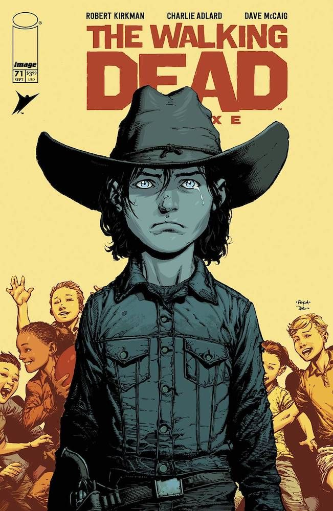

Carl Grimes, interpretado por Chandler Riggs, é o filho de Rick e Lori Grimes. Ele começa como um garoto inocente, mas ao longo das temporadas, ele é forçado a amadurecer rapidamente devido ao apocalipse zumbi. Carl se torna um personagem chave na série, mostrando crescimento emocional e físico ao enfrentar as adversidades do novo mundo. Sua relação com seu pai, Rick, é central na trama, e Carl serve como uma bússola moral em vários momentos da série.
Na HQ de The Walking Dead, Carl também é o filho de Rick e Lori Grimes. Ele é retratado como um jovem que perde a inocência rapidamente à medida que o apocalipse zumbi se desenrola. Carl se torna uma figura endurecida pelo mundo brutal em que vive, mas mantém um forte senso de justiça e moralidade. Ele desempenha um papel significativo na evolução da história, e sua jornada de amadurecimento é uma das mais impactantes na HQ.
Uma das maiores diferenças entre Carl na série e na HQ é o destino do personagem. Na série, Carl morre na oitava temporada, o que foi um choque para muitos fãs, já que ele é um dos personagens principais e sobrevivia até o final na HQ. Na HQ, Carl vive até o último capítulo e herda o legado de seu pai, se tornando um líder na reconstrução da sociedade. Outro ponto de divergência é a natureza de Carl, que na HQ é mais sombrio e menos idealista do que na série.
Carl Grimes não aparece em nenhuma série derivada, como Fear the Walking Dead ou The Walking Dead: World Beyond, principalmente devido ao destino de seu personagem na série principal.
Chandler Riggs começou a interpretar Carl Grimes quando tinha apenas 10 anos, e cresceu no papel. Uma polêmica notável envolveu sua saída da série. Muitos fãs ficaram indignados com a morte de Carl, e houve rumores de que Chandler e sua família foram pegos de surpresa pela decisão dos produtores, o que gerou discussões sobre o tratamento do ator. De acordo com os rumores o contrato de Chandler está acabando e os produtores e o showrunner Scott Gimple, tranquilizaram o ator dizendo que iriam renovar, fazendo com que o mesmo comprasse uma casa mais perto dos estudios, o ator só descobriu que iria morre 1 dia antes das filmagens, Andrew Lincoln não concorodu com a demição do ator e saiu na temporada seguinte. Os fãs pediram a cabeça do showrunner Scott Gimple, fazendo petições para ele sair do comando da série, porém, esse tiro saiu pela culatra, atualmente o ex showrunner de The Walking Dead Scott Gimple, virou showrunner de todo o universo de The Walking Dead, comando todos os derivados.